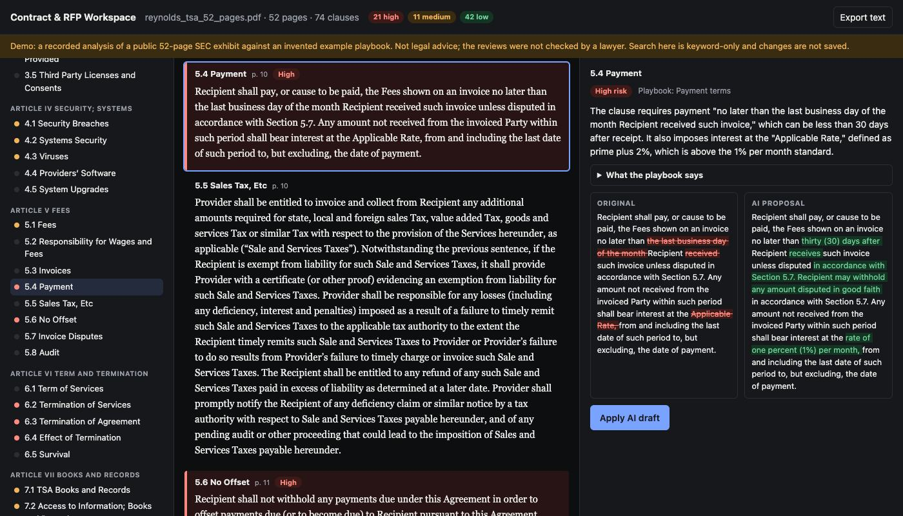
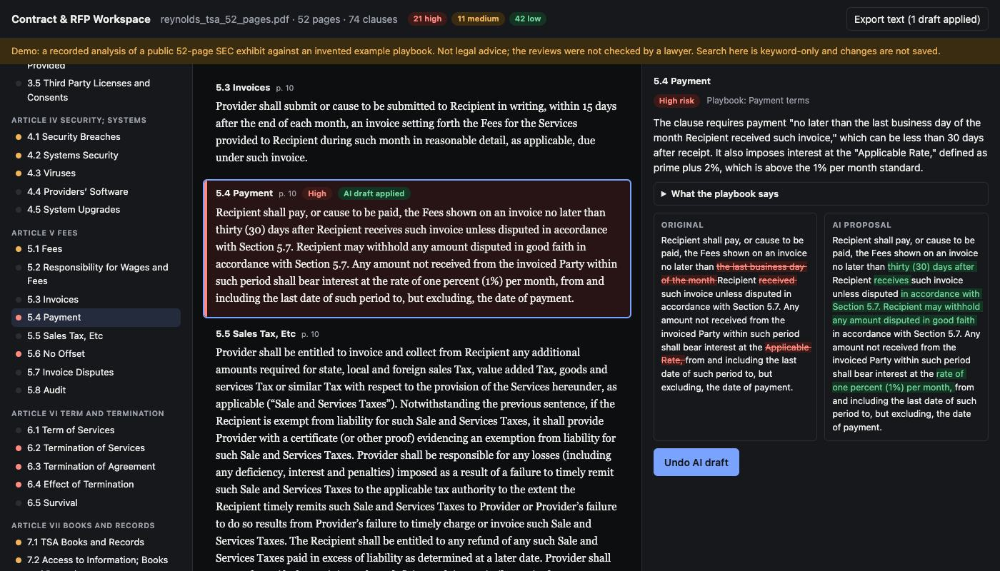

LLM · RAG · 2026-10
Can an LLM Review a 52-Page Contract?
Upload a contract; the service cuts it into its own clauses, scores each against a company playbook (Low / Medium / High), explains why and drafts a replacement with a side-by-side diff. A real 52-page SEC agreement took 32 seconds and $0.18. Nobody checked the answers: that is the open question.

Not legal advice, and not validated. The 74 clause reviews in the demo were produced by gpt-5.4-mini against an invented example playbook; no lawyer checked them and there is no labelled test set behind them. A read-through found one wrong statement and one issue counted eight times (see Results). The contract is a public SEC exhibit distributed in CUAD v1 (The Atticus Project, CC BY 4.0). Contract text is sent to the OpenAI API.
01 — The problem
Sales and legal teams read long contracts and RFPs looking for the same things every time: when do we have to pay, how much can we be sued for, whose law applies, can they raise the price. Most companies have a written “playbook” of the terms they accept. Can software read the whole document, compare every clause with the playbook, and hand the reviewer a ranked list of problems with a redraft for each?
Second of four product blueprints built as a minimum version. The hard parts are not the model call: they are cutting a messy PDF into the right pieces and making the model answer in a fixed shape.
02 — What I built
A Python service with a three-pane web workspace.
- Reading: PDFs (text and ruled tables), Word files, and scans through OCR; running headers, footers and page numbers are stripped.
- Chunking by clause: the document is cut where its own headings start a clause, not every N words.
- Hybrid retrieval: meaning-based search (embeddings in Qdrant) plus keyword search (BM25), merged.
- Review: one model call per clause, forced into a JSON schema, checked again in code.
- Workspace: contents with risk dots on the left, the document colour-coded in the middle, the review, diff and “Apply AI draft” on the right.
03 — How it was built
- 01
Read the file, whatever it is
A PDF page with a text layer is read directly; a page without one (a scan) is rendered to an image and passed through Tesseract OCR. Tables with ruling lines are lifted out as rows so they do not smear into the paragraphs. Any line that repeats on at least half the pages is treated as page furniture and removed. A test renders one page of the contract to a picture and checks that OCR recovers over 90% of its words and the clause numbers survive.
lines += _ocr(page.to_image(resolution=200).original, n) - 02
Cut at the contract's own clause boundaries
Fixed-size chunks split a liability clause in half. Here a clause starts where the drafters started one: “ARTICLE IV”, “Section 5.2 Payment.”, “7.3 …”, or a short title line. The table of contents is dropped, lettered sub-clauses stay with their parent, and a number only counts as a heading if it continues the document's own sequence (which is what stops “75 Park Plaza” becoming clause 75). Writing tests for this caught a real bug: a one-sentence definition was being swallowed as a heading and lost.
MAX_CHARS = 6000 # a clause longer than this is split at paragraph breaks (keeps prompts bounded) - 03
Find the right playbook rule two ways
For each clause the service needs the two or three playbook rules that might apply. Embeddings find text that means the same in different words; BM25 finds exact terms such as a defined word or a section number. Each produces a ranked list, and reciprocal rank fusion merges them by adding 1/(60 + rank). Definitions of the capitalised terms a clause uses are looked up elsewhere in the document and sent along as context.
return rrf([semantic, keyword])[:k] - 04
Make the model answer in a fixed shape
Each clause goes to the model with its candidate rules and three worked examples (few-shot) that show the exact output. The API is told to return JSON matching a strict schema: risk must be Low, Medium or High. Code then checks what a schema cannot: a Medium or High rating must come with a redraft, and the rule cited must be one of those offered. A reply that fails twice marks the clause “needs a human read” instead of guessing. Eight clauses are reviewed at a time; the upload returns immediately and the page polls.
"response_format": {"type": "json_schema", "json_schema": {"name": name, "strict": True, "schema": schema}}, - 05
Show the change, let a person accept it
The redraft is compared with the original word by word, and the right-hand pane shows both side by side with removed words struck through and added words highlighted. “Apply AI draft” swaps the clause in the working copy (and can be undone); the revised text can be exported.
for op, i1, i2, j1, j2 in SequenceMatcher(a=a, b=b, autojunk=False).get_opcodes()]
04 — Results
One real run. The Transition Services Agreement between Reynolds Group Holdings and Reynolds Consumer Products (an exhibit to a January 2020 SEC filing), reviewed from the side of the company receiving the services.
| Measure | Value |
|---|---|
| Pages | 52 |
| Clauses found | 74 |
| Time | 32 s |
| API calls | 150 |
| Cost | $0.18 |
| High / Medium / Low | 21 / 11 / 42 |
| Replies failing validation | 0 |

What a read-through found. The ratings quote the clause and are plausible: payment due by month-end where the playbook wants 30 days; a liability cap equal to the fees for one service where the playbook wants 12 months of fees; Illinois law rated Medium. But in clause 5.4 the model says interest at “prime plus 2%” exceeds the playbook's 1% a month, which mixes up a yearly and a monthly rate: that sentence is wrong. Eight of the 21 High ratings are pieces of the fee schedules flagged for the same uncapped “pass-through of third-party costs”: one issue, counted eight times. A second run of the same file gave 20 High, not 21.
So: it reads and triages a long contract in half a minute for cents, and its output needs a reviewer. Its accuracy is not measured here.
Checks. 16 automated tests, including the whole workflow on the 52-page file with a stand-in model (no key needed), cover 97% of the code and pass inside the Docker image. The live stack (API, Qdrant server, OpenAI) was run once more through Docker.
05 — What I'd do next
- Measure accuracy: CUAD has expert labels for 41 clause types across 510 contracts; score the clause finder and the ratings against them.
- Group repeated findings (one issue across eight schedule pages) and review tables as tables.
- Export a redlined Word file, keep document versions, add user accounts and an audit trail.